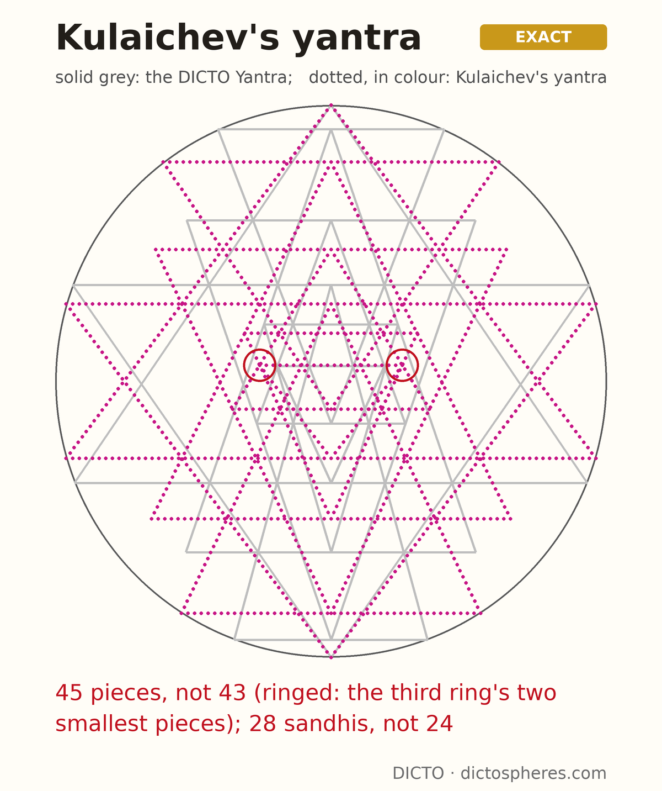
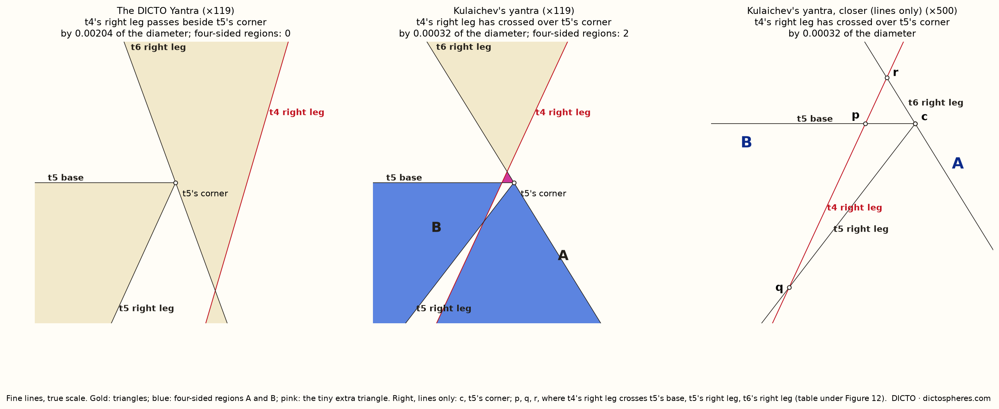
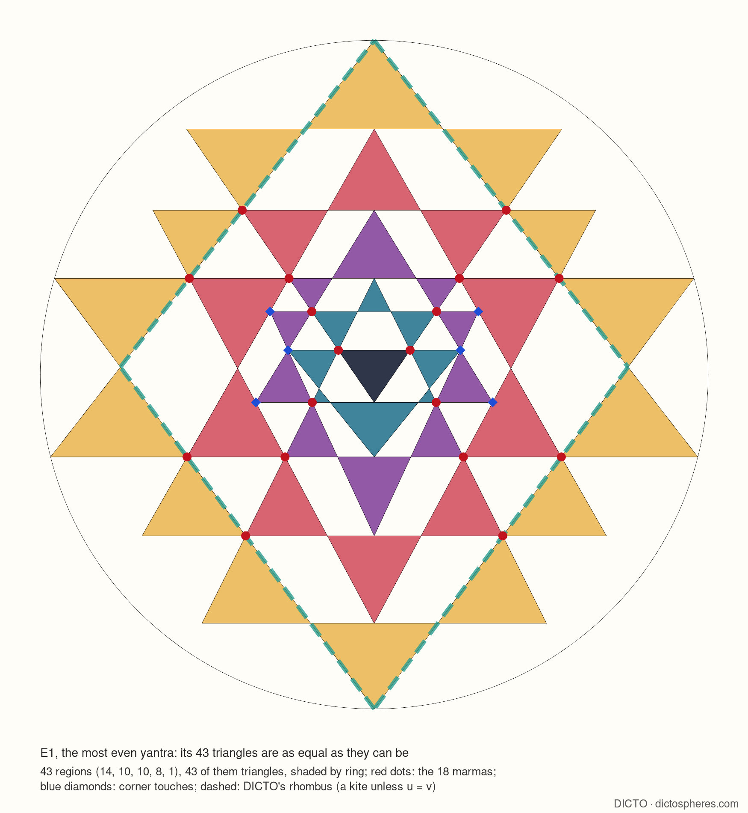

The Śrī Yantra is nine triangles in a circle, four pointing up and five pointing down, drawn for more than a thousand years in India. Its rule is simple to say and very hard to obey: wherever three lines are meant to meet, they must meet in a single point. There are eighteen such meetings. Draw it by hand and some always miss by a hair.
In 1984 A. P. Kulaichev set out to find a yantra in which every meeting is exact and three further things hold: the corners of the top and bottom small triangles touch the circle, and the innermost triangle sits exactly at the centre. Such a yantra exists, and it has been computed to many decimals. But its exact form, the equation its shape obeys, stayed out of reach. In 2014 V.-V. Pustynski judged a purely analytical solution "probably impossible".
DICTO saw a large upright rhombus inside the yantra, made by the long sides of its two great triangles, and proposed reading the flat figure as solids: the triangles as tetrahedra in a sphere, the rhombus as a stella octangula, the tetrahedra spinning into nested cones. That led to a choice of great pair taken from DICTO's own solids: above, the Cleo-Icos, the pyramid from the centre of an icosahedron to one of its faces, a shape known since Euclid; below, a side of Antonius, DICTO's piece that lets the Cleo-Icos fill space. The pair is the Cleo-Antonius, and the yantra on it the DICTO Yantra.
This November both yantras were solved exactly. The slope of the DICTO Yantra's great triangles turns out to be the answer to one equation in whole numbers, whose highest power is 160. Kulaichev's yantra, the one judged probably impossible, has an equation too, with highest power 348. An exact equation means the shape is known completely, not just to many decimals.
Results like these need checking from more than one side. Each yantra was solved again straight from its geometry, to 260 decimal places, without using the equations: both equations hold there to all 262 decimal places. DICTO then proposed running the check backwards: start from each equation alone, rebuild the whole yantra from its root, and see whether the centre comes out centred without being told to. It does, to 255 decimal places, and every one of the eighteen meetings holds.


Kulaichev's conditions still leave one thing free. He closed it with equal great triangles; the DICTO Yantra closes it with the Cleo-Antonius. Neither choice is forced by mathematics, and the paper says so. What the exact forms now settle is a difference anyone can count: Kulaichev's yantra has 45 small regions, two extra tiny triangles in its third ring (as Pustynski noticed), and four of its regions are not triangles; the DICTO Yantra keeps the traditional 43, every one a triangle.

To DICTO's eye the most beautiful of all is a third yantra, E1: the one whose 43 triangles are as equal in size as they can be. It lets its smallest triangles sit just inside the circle, as painters have always drawn them. Computing it exactly showed why it looks so balanced: one of its lines runs precisely through the corner of another triangle. Push it one step further and four of its triangles lose their tips while two tiny new ones appear, the same break that marks Kulaichev's yantra. The yantra that looks best is the one taken right to the limit where every region is still a triangle.


Read more: DICTO, The DICTO Yantra (#103), DICTO DOI: 10.5281/zenodo.24052633; A. P. Kulaichev, Indian J. Hist. Sci. 19 (1984); V.-V. Pustynski, Indian J. Hist. Sci. 49 (2014); A. Chiodo, C. R. Math. 359 (2021); the Greek sources of the Cleo-Icos (Euclid, Elements XIII; Hypsicles, Book XIV) are in #103. Computation and drafting with Claude (Anthropic).